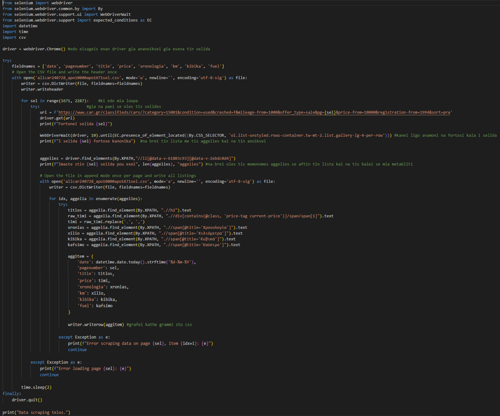
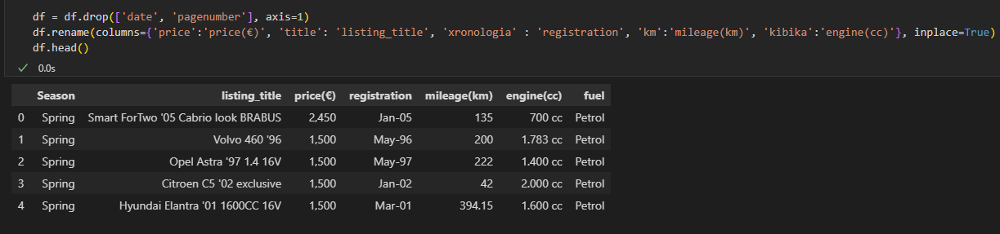
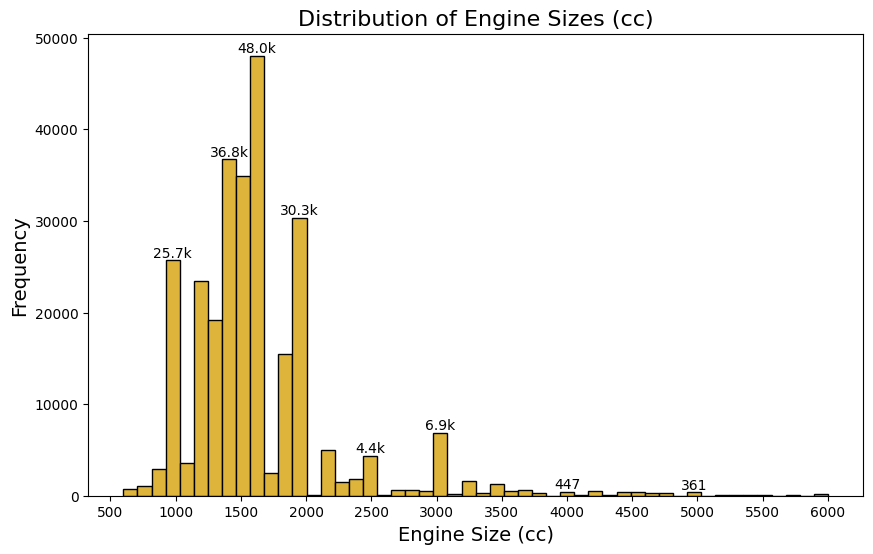

PORTFOLIO


Educator transitioning to a full-time data related role

This project was a routine part of my duties as a Data Analytics Assistant within a local Value Betting Syndicate (You can find the source file here). Tasks included:
During the data processing phase of this project, several key steps were undertaken to refine and structure the dataset for in-depth analysis, including:
1. Seperated Datetime column into Date and Time for detailed analysis.
2. Refined column labels for better interpretability and clarity.
3. Extracted and standardized odds data for consistency.
4. Cleanup Selection Column to remove irrelevant information.
5. Standardized data via 'Find and Replace' to unify the bet_type and result columns.
6. Extracted and cleansed market information from the event column for data integrity.
7. Profit and Loss (P/L) calculation into a new column to measure financial performance.
8. Introduced Live Bet column to mark live bets based on the selection column data.
9. Calculated ommited data, where possible, to enhance dataset reliability and completeness.
10. Created Odds Buckets to categorize bets and analyze outcomes.
11. Classified Market Category to categorize bets and analyze market-specific trends.
The processed document went from this:
To this:
Next, I used pivot table functionalities to calculate key metrics to assess the strategic effectiveness and financial health of the betting account, including:
Below we see each of these in comparison to their twelve month average for a quick performance comparison of the account.
This specific account showed around average results on 'Hit Rate', 'Average Stake' and 'Average odds'. However, the amount of bets this account placed (47% above average) and a rare ROI performance (60% above average) drove its high profitability compared to a 12-months average P/L. The high ROI, coupled with the insights from the 'Monthly Growth' in the dashboard below might indicate that the account was in a pick in variance.
The dashboard below effectively captures all the critical information. It allows for advanced filtering, making it easy to interactively explore and analyze the account’s performance in detail.

For example, we can easily see above that 'Handicaps' were responsible for most of the P/L and almost 2/3 of the picks on this account.
While below we can easily see that the Odds bucket 1.5-1.99 in December returned 110% of the total P/L. That is how a great run looks like!
This project, which I managed end-to-end on my own, transformed from a bi-monthly task to several times within the same period. Primarily focused on reporting, my work facilitated smoother operations and informed decision-making across the organization.
Thanks for reading. Some information have been altered to ensure privacy. Feel free to reach out for any comment.
Welcome to our analytical journey through the galaxy of "Star Wars Unlimited" card game! After following my brother;s passion for card/ board games and his advise to purchase a "Spark of Rebellion" case full of collectibles, I wanted to:
Therefore, I asked myself:
To answer these I performed a detailed value analysis against the vibrant marketplace of cardmarket.com. To keep everything organized and make sense of it all, I used Excel. It helped me catalog every card and set up a dashboard. (You can find the source file here).
Some snapshot insights include:
At the start of our project, we took every card in our "Star Wars Unlimited" collection and listed them in an Excel spreadsheet. For each card, we also found its current selling price on the "https://www.cardmarket.com/" website. This way, we could see both the name of each card and how much it might sell for, all in one place.
To make our spreadsheet even more useful, we used Excel's conditional formatting feature. This let us color-code the cards. With different colors, we could quickly tell which cards were available for certain game functions, which ones were rare or common, and how their market prices compared. This color-coding made it easy to spot patterns and differences at a glance, setting us up nicely to dive deeper into analyzing our collection. This first step of organizing and pricing was key to getting a clear picture of what our collection looked like in terms of variety and potential value.
This is how part of our Excel Sheet looks after we are done:
Moving forward with our analysis, we honed in on two critical questions:
First,what is the total worth of our "Star Wars Unlimited" collection, and how is this value distributed?

At the time of our market search, our total expected value amounted to 776.51€. Of course, this is only an approximate evaluation and does not take into account transportation, packaging, and other potential costs.
Now, on value distribution, we first checked total value by type.

And then, total value by rarity.
Total value, though, is only half the picture. In how many cards is this value distributed? Normal cards seem to hold much value, almost 47% of the total expected value, but would it be a viable strategy to try and harvest this value?
We needed a bit more information:
Okay, percentage-wise, normals do hold a decent amount of value, but €364 in 2039 cards could be a tricky play. With an average of 0.17€ per card, selling them in bulk seems like the only way. That's a good insight, but probably not our first strategy to pursue; we'll need to keep looking!
So then, what are some effective strategies for extracting value through reselling parts of our collection without compromising our competitive edge in the game?
Strategy number one comes directly from here:
Now, this is valuable information. The top 5 cards represent €323 or 41.6% of the total expected value. Interestingly, the Darth Vader card, which is allowed up to three times in play according to game rules, appears three times in our collection. Given Darth Vader's popularity, this could be a significant advantage. Though it means I'd need to stick to playing Rebel, it's a trade-off I'm willing to make. We might be onto a winning strategy here.
Then, we can either focus on selling a few other valuable cards:
Or, utilising some bulk selling.
As we wrap up our look at the "Star Wars Unlimited" cards, we learned a lot about their worth and how to smartly sell some without spoiling the fun of the game. This project showed us how to balance making money with keeping the game exciting. I had a great time figuring out my collection's value, just as I love playing the game. These lessons on card value are something I'll use as I keep collecting and playing. This adventure into the world of card collecting was as fun as it was educational, and I can't wait to put what I've learned into action.
Thanks for reading. Feel free to reach out for any comment.
After helping in a critical migration error from Capsule to HubSpot CRM, a project found through Upwork, I was hired as a HubSpot Administration & Implementation support. This led me to learn more for the CRM through its Academy and compile an easy solution for a real business. This project is the sales pitch I prepared for solving the real life business problem.
This project's presentation is still on development. Further information will be published soon.
In this project, my aim was to explore the data and see if car prices indeed rise in the winter months and drop in the summer. Along the way, I also hoped to improve my Python skills, especially when it came to web scraping and data analysis. Inspired by the thought of selling my car the next year and after hearing a similar advice from a merchand friend, I decided to gather some data to have a more solid understanding of the market trends and pricing. So, I decided to use python and Selenium to scrap data from Greece's largest used car website in 3 month intervals in 2024.
Here's a snapshot of the web scraping script I used to collect the data:
Once the data was successfully scraped, the next step was to clean and process it for analysis.
First, I needed to consolidate the CSV files where the scraped data was saved. Since I scraped thousands of pages each time, I often hit the server's request limit and had to pause before resuming the process. To prevent losing all the data in case the server banned me or the script failed, I chose to break the data into several smaller files. This way, I could avoid starting over from scratch.
Next I moved on on loading and cleaning the data. This involved removing duplicates, handling missing values and outliers, and formatting the data for easier manipulation. Up until this point, I hadn't worked with Jupyter Notebooks, but from here on, I switched to using them to make data handling and manipulation more efficient. The interactive environment of Jupyter made it easier to test code snippets, visualize the data, and keep track of my progress as I cleaned and analyzed the dataset. Here's how I approached the data processing phase:
First, I installed and imported the necessary libraries:
Then, imported the data and took a first look:
Decided to drop 'date' and 'pagenumber' columns, since they were only helper columns for scrapping and not usefull anymore. Also, renamed a few columns for clarity
Next, I checked data types and shape:
.PNG)
Many unexpected objects types, so I checked for missing values before I attempt to .describe():
The scrapper did a good job of not leaving blank values. So, I formatted the data types appropriately:
And took a look at the data again:

Next, looked for duplicates and deleted them:
Out of the initial 305,595 rows, the data was reduced to 282,995 after deduplicating, meaning 22,600 entries were deleted—about 7.39% of the original dataset. This reduction is reasonable, given the high volume of pages scraped and the fact that the website mixed in a couple of ads with the listings using a dynamic object, making it impossible to filter them out while scraping frontend with Selenium.
Next, I looked for outliers in the price(€), mileage(km), and engine(cc) columns. I started by visualising the price(€) column for a first look:
Listings costing under 1500€ where excluded during scrapping. There are a few very expensive cars close to 1m euros, that are definatelly outliers, and many that according to the right whisker of this boxplot are branded outliers. I thought it would be helpfull to see the price of that right whisker:
Almost 32000€, which felt too low to exclude all cars above it, perhaps something around the 100k mark is more reasonable for the car market. Retrieved the number of listings above 100k euros, 2016 listings or the 0.71% of our initial data, seemed as a safer option for exlusion. Followed the same process for the 'mileage(km)' column, where I excluded the 1st and 99th percentile, and 'engine(cc)' column, where I excluded anything below the 0.4% and 99.9% of the data, and ended up with 274192 listings:
By this point, I had already gotten a first look at the data and was ready to dive deeper now that it was cleaned:
First look in the clean data:
Visualised the price distribution, and saw that most car prices fall between €5,000 and €20,000. The distribution is right-skewed, indicating a small number of high-priced cars:

Followed, similar process for the engine sizes and found that the majority of cars have engines between 1,000 cc and 2,000 cc, which is typical for personal vehicles:
And the same for mileage, where most cars have mileage between 50,000 and 200,000 kilometers, with very few having extremely high or low mileage:
Then, I looked at my categorical data, starting with fuel types, where by far the most common fuel types are Petrol and Diesel, consisting almost the 91% of the total listings. Another noticable insight here, is that almost one in every twenty cars sold, use Gas/lpg as a fuel:
Lastly, I looked at the number of listings by season. They are fairly even across seasons, with a slight increase during the Spring:
After gaining a better understanding of the dataset through the EDA, it was time to focus on testing my initial hypothesis: whether car prices tend to rise in the winter and drop in the summer. For that, I calculated and visualized the mean and median car prices for each season
From this, I could see that:
So, what if I tried to make similar comparisons in various segments of the data?
I intially segmented the data based on engine sizes, using the Greek vehicle tax categories as a framework:
And used a bar graph to quickly view them:
Then, grouped by 'Engine Category' and 'Season'; calculated the mean and median of 'price(€)', and visualised them:
Both graphs are consistent in indicating that car prices tend to increase from Winter to Summer. This suggests a seasonal trend where prices rise as we move toward the summer months, which is again contradicting my initial hypothesis. What is more, the flatter trend for smaller engine categories (A, B) in the second and third graph suggests that these categories don't contribute much to the overall price increases from the winter to summer.
To explore further segments of my dataI followed the same logic starting with mileage categories and season:
Mean Price Trends by Mileage Category and Season

Mean Price Trends by Mileage Category and Season

And then segmenting to price categories and combine them with season:
Mean Price Trends by Price Category and Season

Median Price Trends by Price Category and Season
Staying consitent with the analysis so far, across both mileage and price categories, car prices tend to increase from Winter to Summer. This trend is visible whether we look at mean or median values. Although, not all sub-groups contribute the same to the total increase, some lines are flatter than others.
I truly enjoyed the entire process and learned a lot along the way. Interestingly, the initial hypothesis—that car prices tend to rise in the winter and fall during the summer—was not supported by the data I collected. In fact, the opposite seemed to be true: prices actually increased during the summer months.
Some key insights in bite sizes:
There is plenty to do to expand this project, like including cars priced below 1,500€, which were excluded from this round, and explore motorbikes as well. Definatelly, I could try to collect more data over a longer period of time, perhaps scraping more frequently, like once a month, and gather data from different dealers. Additionally, I could dive deeper into segmenting the analysis—such as focusing on cheaper cars with high mileage throughout the year. I hope to have the time and data to further explore the topic.
Thanks for reading. Feel free to reach out for any comment.
This is a project comparing wagering performance from different accounts. It spans from January 2022 to June 2022, although these are not the actual dates of the wagering (have been changed for privacy reasons), the data were agthered in the span of 6 months. Along with the actual dates, various other sensitive data have been altered for privacy reasons. (You can find the source file here).
This is a project steming from my previous employment as a Data Analytics Assistant. It was rather a rare way of analysing data, since usually each account would follow different strategies simultaneously. Therefore, this is actually the first step for gathering data and evaluating a given strategy. I was be responsible for collecting, processing and presenting the data to the stakeholders responsible for evaluating the performance compare to overall portfolio and current market situation. More specifically, I:
During the data processing phase of this project, several key steps were undertaken to refine and structure the dataset for in-depth analysis, including:
1. Seperated Datetime column into 'Date' and 'Time', and calculated 'Month', 'Time' and 'Day of the Week' columns.
2. Refined column labels for better interpretability and clarity.
3. Extracted and standardized odds data for consistency and calculated 'Odds Bucket' column.
4. Cleanup Selection Column to remove irrelevant information.
5. Categorised in 'Market Category' the events.
6. Calculated Profit and Loss (P/L).
7. Created 'Won' column out of 'Result' data column.
8. Introduced Live Bet column to mark live bets.
9. Calculated ommited data, where possible, to enhance dataset reliability and completeness.
Here is a snapshot of the processed data table:
Next, I used pivot tables to calculate key metrics, including:
1. Return on Investment (ROI)
2. Hit Rate
3. Average Odds
4. Average Stake
5. Picks and P/L
6. Total growth over time
Which resulted to the dashboard seen below:
What is more, the data in the dashboard can be easily filtered by:
1. Account
2. Market
3. Odds Bucket
4. Month
5. Day of the Week
So that we could easily see, for example, how did Account 5 do on Handicaps?
Or, handicaps in general?
How did wagering in the 2.00 - 2.99 Odds Bucket perfromed in February?
Or, how was the strategy performing in Saturdays?
As mentioned in the beggining, this was the first step for evaluating a given waggering strategy across multiple accounts and overall. I was responsible for this project from start to finish, i.e from gathering and processing the data according to requirments to presenting the produced dashboard. I reported on the the process and all analysis done to contribute to the decision making process of the organisation.
Thanks for reading. Some information have been altered to ensure privacy. Feel free to reach out for any comment.
In this project I was very eager to practice my SQL and Tableau skills, while finding some insights in a question that I had in my mind for years. How do funding for preschool public education differ around the world?
This project's presentation is still on development. Further information will be published soon.
Uncover the best city to sell your car in Greece with our detailed comparison of car prices in Athens and Patras. Learn where you can get the most value for your vehicle today! gnk domi pou tha eprepe na akoloutho Main Q/problem: Is there a better region to sell my Smart Fortwo? Planned strategy/ what I actually did: scrap periodically, compare prices (mean max, klp) Outcomes: btika oti i patra gamaei, isos epeidi einai pio mikri agora i eikasia mou
This project's presentation is still on development. Further information will be published soon.
New Image Description
This project's presentation is still on development. Further information will be published soon.
New Image Description
This project's presentation is still on development. Further information will be published soon.
New Image Description
This project's presentation is still on development. Further information will be published soon.
I am a Data Analytics & CRM Specialist with a background in education and data-driven roles, currently transitioning into a full-time data-focused career. My academic background is in Primary and Pre-school Education (BA, University of Patras, Greece) and Philosophy (Masters, University of Sheffield, UK). I began my career in education as an Early Years Teacher and Private Tutor. Over time, my interest shifted towards data, leading me to take on roles such as Data Analytics Assistant and HubSpot Administration & Implementation Support. In these roles, I have developed strong skills in data collection, processing, analysis, and visualization using tools like Excel, HubSpot, Databox and Python. I've worked on projects involving CRM management, workflow automation, and reporting, which has deepened my expertise in turning raw data into actionable insights. I am currently working as a HubSpot Implementation Specialist, supporting CRM optimization and data management efforts, while continuing to freelance through Upwork. I am passionate about leveraging data to solve complex problems and am eager to take on new challenges in data-centric roles. You can view my work and projects on my Upwork profile and dedicated portfolio page below.